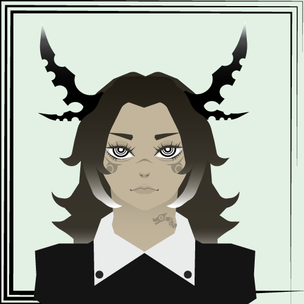

A world that is at peace but something feels off and its citizens often feel like they have forgotten parts of their memories maybe something or someone.....
This is a picture of the oldest resident of the village. He seems to be quite knowledgeable about the village's history, but he keeps rather to himself. He's quite the individual once you really get to know him.